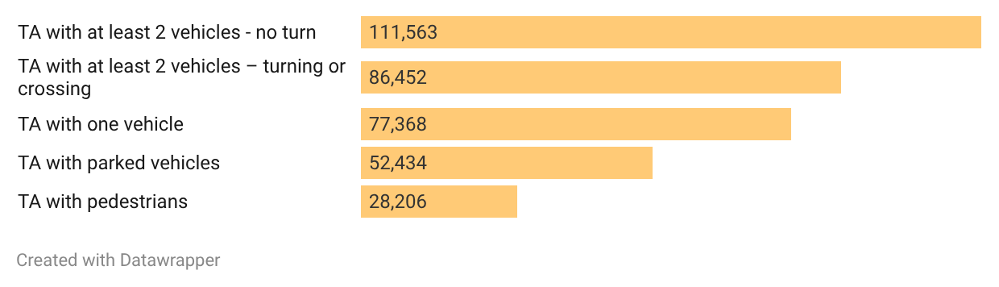
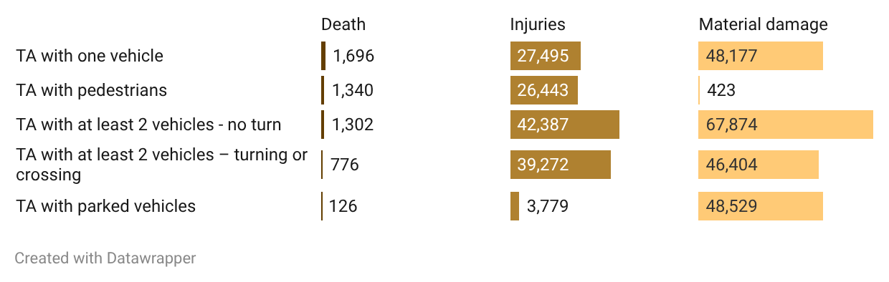
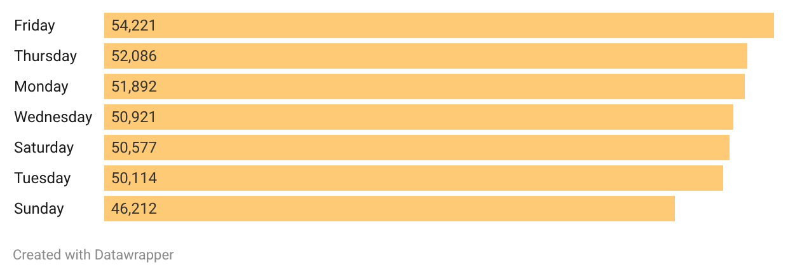
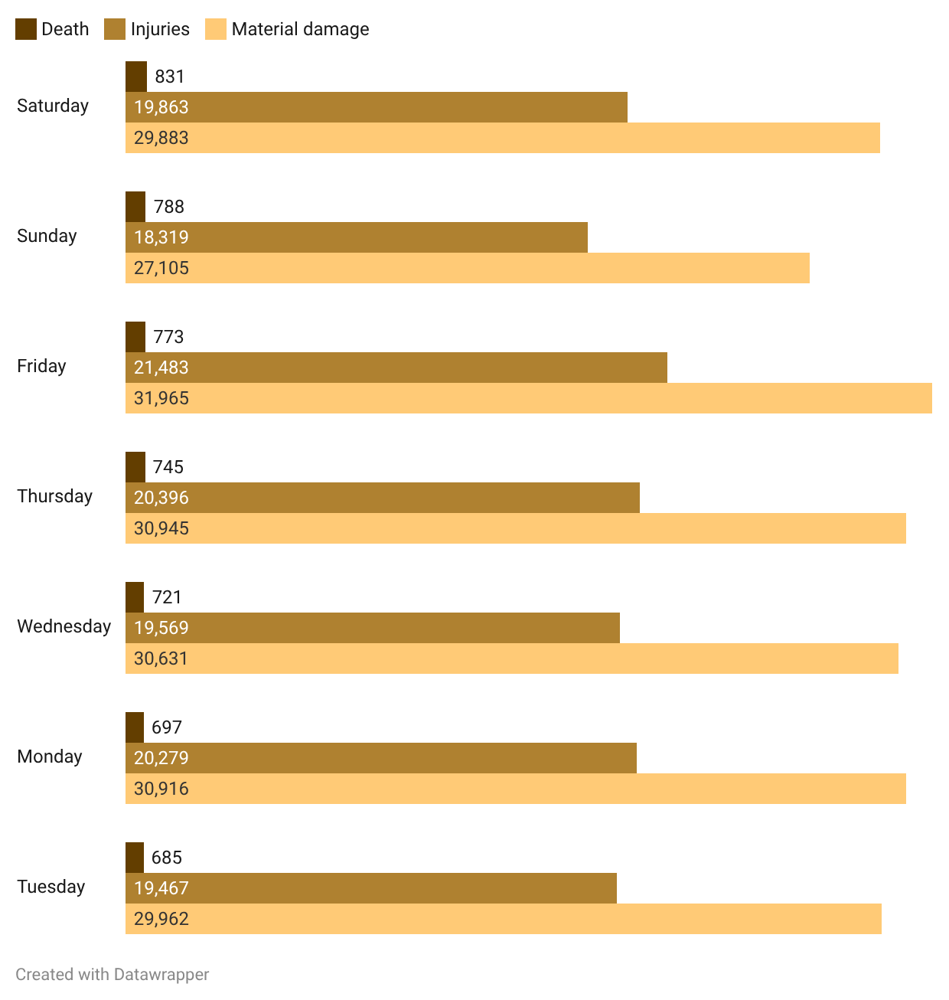
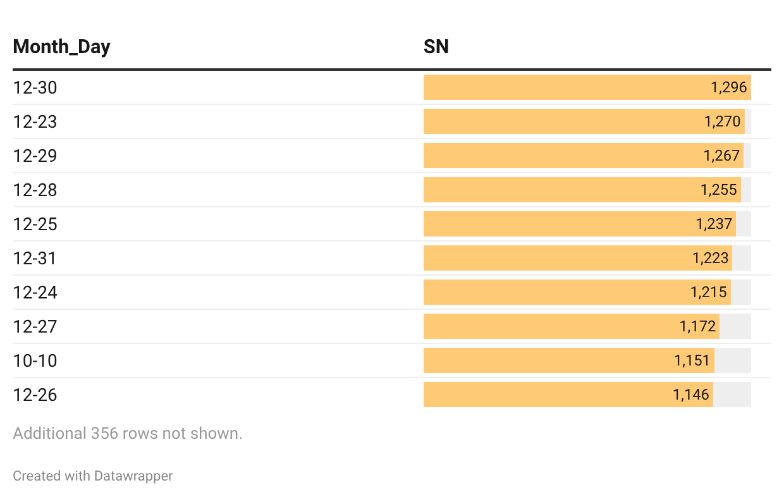
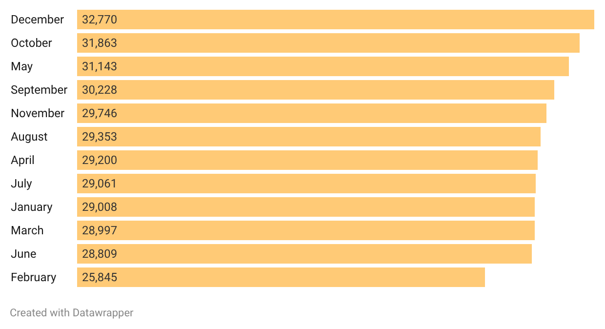
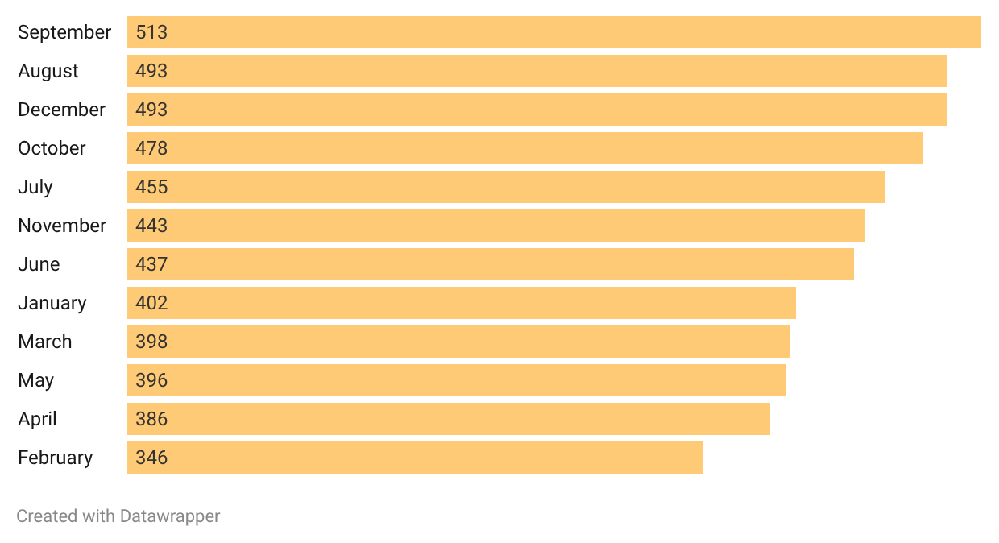

Take care in Serbian traffic in December
Data about recorded traffic accidents Serbian police published for the previous decade show that end of the year goes hard for traffic participants in the country.
Data about recorded traffic accidents Serbian police published for the previous decade show that end of the year goes hard for traffic participants in the country.
A dark Audi with Austrian plates was flying low on a highway passing through Suricin, the suburb of Serbian capital Belgrade, on the Friday night of July 24 until police stoped him around 1AM. Law enforcement were in plain civilian car equipped with specialized electronics including speedometers, so called interceptor vehicle.
When Audi came on their radar, the device measured speed of 215 kilometers per hour, on the road where the speed limit is 100. The highest allowed speed on Serbian highways is 130.
Serbian police said in the press release next morning that the 20 years old driver, Serbian citizen, was excluded from traffic and that they filed a misdemeanour complaint against him over violent driving.
The police press release, however, brought even more chilling information that “since the beginning of July, 35 people have lost their lives in traffic accidents, 11 of whom were under the age of 30”.
While these casualties are yet to make to the police statistics for 2026, LEDE analyzed publicly available data about 356,023 traffic accidents Serbian traffic police recorded from 2015 until mid-2026.
In the last decade, 5240 people died in total on Serbian roads. In over 139 thousands of accidents there were injuries recorder, while material damage was recorded in over 201 thousands.

Police data are structured in couple of categories, but these categories include only one option, meaning that we cannot know if there were some accident in which multiple things happened. It is not clear from their data how they categorised events in which, for example, both injuries and material damage happened.
Because of this, when analyzing distribution of accidents per cities or per day, we used only numbers of dead people, as it is clear they could only be calculated as unique cases.
According to police data, people in Serbia in past decade most often died in traffic accidents that included only one vehicle, followed by those that included pedestrians.

Majority of death cases were recorded in Serbian capital Belgrade, which also saw the biggest number of accidents in total. This came as expected, having in mind it is the biggest and the busiest city in the country and that some highways are passing throughout it.
December 14 2018 is the single date with the highest recorded number of traffic accidents, 170 in total. According to the news archive, parts of Serbia were hit with strong snowstorm that Friday.


December 30 is the single most common date with traffic accidents in previous decade, recording 1296 traffic accidents in total for 10 years. Out of top 10 dates with highest number of accidents in previous decade, nine are in December, including the New Years eves, which saw 1223 traffic accidents in total.


One of such was the accident in which two person died on December 1 last year in Serbian second biggest city of Novi Sad.
A 26 years old driver of BMW, according to media report, crossed into the opposite lane and hit a cab, in which were driver and three young female passengers. Cab driver died in the hospital following the accident while one of the passengers, who was heavily injured, died couple of months later.
The BMW driver remains in custody and the indictment was filed against him in June.
LEDE analysis, however, shows that, Septmber is the month that sees most of death cases, followed by August and December.
